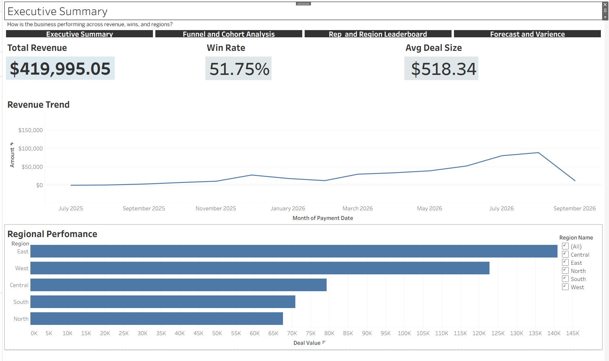

SalesSight360
From messy CRM data to an executive-ready forecasting dashboard.
01The Problem
Leadership was reporting revenue and pipeline using flawed, unadjusted numbers — a common sales-ops failure mode where raw pipeline is treated as a reliable forecast. This project simulates that real-world problem end to end: synthetic CRM data generation, cleaning, star-schema modeling, SQL analysis, Python forecasting, and an interactive Tableau dashboard, all built solo over 15 days.
02The Data
A synthetic CRM dataset was generated with deliberately realistic messiness — duplicates, missing values, inconsistent formatting, and orphan records — to mirror what a real sales-ops handoff actually looks like, rather than starting from clean data.
03Data Engineering & Data Model
ETL
A Python pipeline (pandas + SQLAlchemy) cleaned and standardized the raw CRM export and loaded it into PostgreSQL — deduplication, missing-value handling, and format normalization before anything hit the analytical model.
Star schema
The cleaned data was modeled into a PostgreSQL star schema — 5 dimension tables and 2 fact tables with enforced foreign keys — built for reliable, repeatable SQL analysis rather than one-off queries.
Data quality
A dedicated QA pass caught a real cross-table bug: a sign-correction applied to one table hadn't propagated to a dependent table. Catching this kind of issue before it reaches a dashboard is exactly the discipline reliable analytics requires.
04SQL & Analysis
SQL analytics
Window functions — RANK, LAG, cumulative SUM — powered revenue trends, win rates, and rep rankings directly in PostgreSQL.
Funnel & cohort analysis
Funnel and cohort-conversion analysis was built with right-censoring correctly accounted for, so in-progress deals aren't mistakenly counted as losses.
05Forecasting
A probability-weighted pipeline forecasting model was built in Python and backtested against historical outcomes, reaching 22.6% MAPE. A peer-relative variance and alerting system flags at-risk sales reps by comparing each rep against their peer group rather than a single fixed target.
06Dashboard
A 4-page interactive Tableau Public dashboard — Executive Summary, Funnel & Cohort, Rep Leaderboard, and Forecast & Variance. Browse it live below, or open it directly in Tableau Public.

This dashboard is best viewed on a larger screen.
Open Live Dashboard in Tableau Public07Key Results
| Metric | Value |
|---|---|
| Verified paid revenue analyzed | $419,995 |
| Blended win rate | 51.8% |
| Pipeline forecast correction | 71–74% overstatement corrected |
| Forecast model accuracy (MAPE) | 22.6% |
| Reps flagged for coaching | 10 of 40 |
08Challenges & What I Learned
- Caught and fixed a real cross-table data bug during a dedicated QA pass, reinforcing that reliable analytics depends on reliable data — not just a good model.
- Learned that industry rules of thumb assume data shapes that don't always hold, and that recognizing when a standard technique doesn't fit the data is as important as knowing the technique.
- Migrated the database layer from SQLite to Postgres mid-project and hit real dialect differences (strict
GROUP BY,HAVINGalias scoping) worth knowing for any SQL portability work.